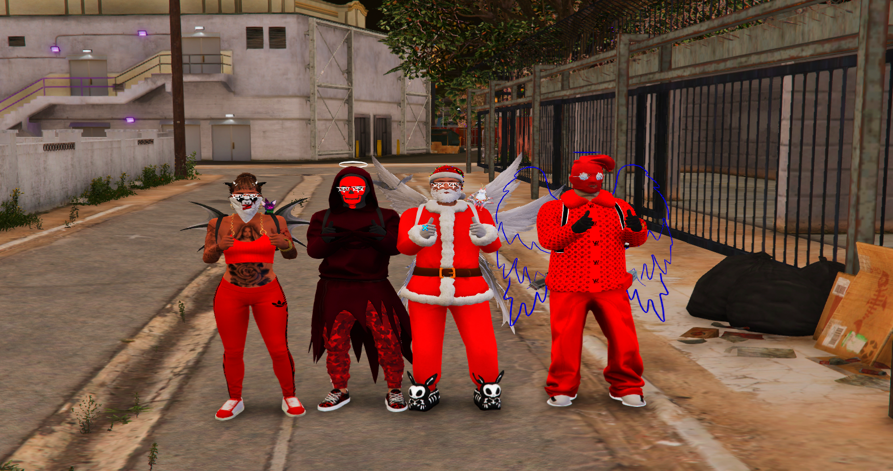

"Die Farbe Rot ist nicht nur eine Farbe, sie ist eine Lebenseinstellung." – Mein Antrag auf Verlängerung als OG der Bloods Street Gang.
Antrag ansehenPersönliche Eckdaten & aktuelles Ingame-Profil
Die Führung der Bloods Street Gang

Meine Motivation für die Verlängerung meiner Amtszeit
Ich beantrage die Verlängerung meiner Amtszeit als OG der Bloods Street Gang, weil ich die Verantwortung weiterhin übernehmen und die Organisation nachhaltig weiterentwickeln möchte. In meiner bisherigen Zeit als Führungskraft habe ich mich darauf konzentriert, Mitglieder zu koordinieren, klare Strukturen zu schaffen und den Zusammenhalt zu stärken. Daran möchte ich anknüpfen: Ich will die Aktivität auf einem konstant hohen Niveau halten, neue Mitglieder gut integrieren und allen eine klare Rolle innerhalb der Organisation ermöglichen. Loyalität, Disziplin und gegenseitiger Respekt bleiben dabei zentrale Werte. Außerdem möchte ich weiterhin abwechslungsreiches, hochwertiges Roleplay fördern und die Zusammenarbeit innerhalb der Gang sowie mit anderen Organisationen stärken. Mein Ziel ist es, die Bloods auch künftig als gut organisierte, aktive und verlässliche Gemeinschaft zu führen.
Während meiner bisherigen Amtszeit habe ich Erfahrung darin gesammelt, die Organisation zu führen, Mitglieder zu koordinieren und den Zusammenhalt innerhalb der Gang zu stärken. Ich arbeite daran, klare Strukturen zu schaffen, Aufgaben sinnvoll zu verteilen und eine zuverlässige Kommunikation sicherzustellen. Diese Erfahrung möchte ich weiterhin einbringen, um die Bloods aktiv, organisiert und langfristig erfolgreich aufzustellen.
Ich bin täglich etwa 3–6 Stunden online und weiterhin motiviert, Zeit in die Betreuung, Organisation und nachhaltige Entwicklung der Bloods zu investieren.
Ich kenne das Server- sowie das Ghetto-Regelwerk in- und auswendig und lege allergrößten Wert auf qualitatives, tiefgründiges und einwandfreies Roleplay ohne unnötiges Eskalieren.
Meine Ziele für die nächste Amtszeit und die Weiterentwicklung des Roleplays
Die Bloods stehen für Zusammenhalt, Stärke und Respekt. Ziel ist es, die Bloods dauerhaft als strukturierte, aktive und ernstzunehmende Gang zu etablieren und ihre positive Entwicklung fortzusetzen. Der Fokus liegt auf internem Zusammenhalt, klaren Regeln und kontrolliertem Wachstum, um langfristig Stabilität zu sichern.
Neue Mitglieder werden gezielt und kontrolliert aufgenommen. Voraussetzungen für den Beitritt:
• Erfolgreiches Bewerbungsgespräch
• Hohe Aktivität & Teamfähigkeit
• Absolute Loyalität gegenüber den Bloods
• Mindestens Visumsstufe 5
Unsere Grundpfeiler sind:
• Respekt: Intern wie extern vor allen Spielern.
• Disziplin: Befehle der Führungsebene werden strikt befolgt.
• Zusammenhalt: Probleme werden intern gelöst.
• RP-Qualität: Kein sinnloses Eskalieren.
Ein erfahrener Gangler kümmert sich speziell als Mentor um neue Mitglieder.
Um dauerhaft Stärke und Präsenz zu zeigen:
• Tägliche Zink-Aktionen im Ghetto
• Geiselnahmen & Shop-/Ammo-Raubs
• Gezielte RP-Situationen & Gang-Events
• 2x täglich FZ-Raid (Fort Zancudo)
Wir pflegen einen respektvollen Umgang mit anderen Organisationen. Konflikte werden rein RP-gerecht und mit Verstand ausgespielt – es gibt keine unnötigen Kriege ohne triftigen IC-Grund. So bauen wir einen stabilen Ruf als gut organisierte, hochprofessionelle Gang auf.
Hierarchie und Aufgabenverteilung (15 Ränge)
Leader der Gang – Gesamtverantwortung & strategische Führung.
Rechte Hand des Leaders & stellvertretende Leitung.
Teil der erweiterten Leaderschaft & Taktikplaner.
Teil der Leaderschaft – Zuständig für Disziplin & Durchsetzung.
Leitet Aktionen (Zinken, Raubs, FZ-Raids & Gang-Events).
Leitet das Ausbildungs- & Recruiting-Team.
Führt Bewerbungsgespräche & weist Neulinge ein.
Erfahrener Kämpfer & Spezialist für Gefechte.
Kopf und Strategischer Leiter des Turf-Teams.
Aktives Mitglied des Turf-Teams zur Gebietseroberung.
Erfahrener Schütze mit taktischer Verantwortung.
Späher & Aufklärer mit taktischer Rolle.
Hat sich bewiesen – Vollwertiges Mitglied der Gang.
Offizielles Mitglied in der Probezeit, lernt Straßenregeln.
Straf-Rang für Fehlverhalten innerhalb der Gang.
Forums-Erfahrung & Regelfestigkeit
Ja, absolut. Ich habe bereits umfassende Erfahrung in der Gestaltung, Moderation und Pflege von Forumsbereichen gesammelt und kenne mich bestens mit der Strukturierung, Beitragsbearbeitung und Rechtevergabe aus.
Ja. Ich habe das Regelwerk für Leader vollständig gelesen, verstanden und stimme allen Vorgaben und Pflichten uneingeschränkt zu.